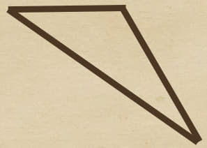
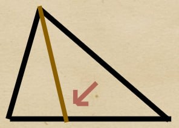
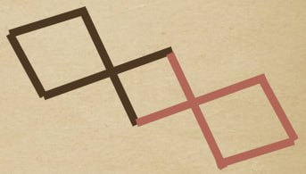
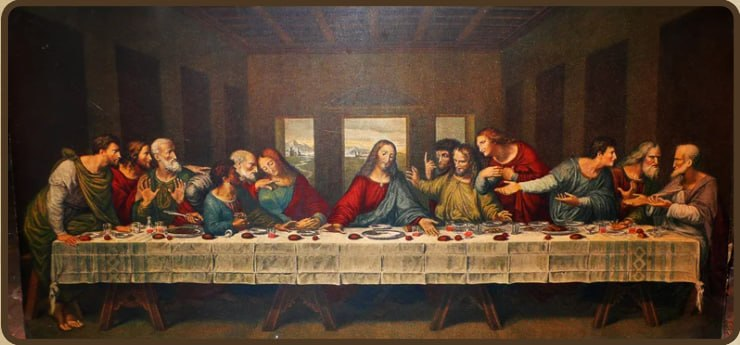

Задача 1
Дан треугольник:
Какой вид имеет данный треугольник?

Дан треугольник:
Какой вид имеет данный треугольник?
1. прямоугольный 2. остроугольный 3. тупоугольный

Дан треугольник со сторонами: 7, 7, 9.
Какой вид имеет данный треугольник?
1. равносторонний 2. равнобедренный 3. разносторонний
Что это за линия?
а) биссектриса
б) высота
в) медиана

Что показано на рисунке?
а) пропорция
б) перспектива
в) симметрия

Посмотри на картину внимательно. Какие геометрические фигуры преобладают в композиции этой картины?

Вычислите объём пирамиды, основанием которой является прямоугольник со сторонами 3 и 4 м. Высота половины пирамиды равна 4,5 м.
Дана пирамида с высотой 9 метров и объёмом - 108 метров. Вычислите длину одной стороны основания.